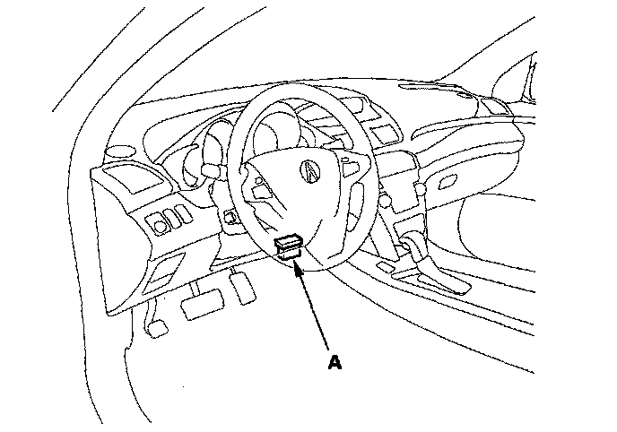
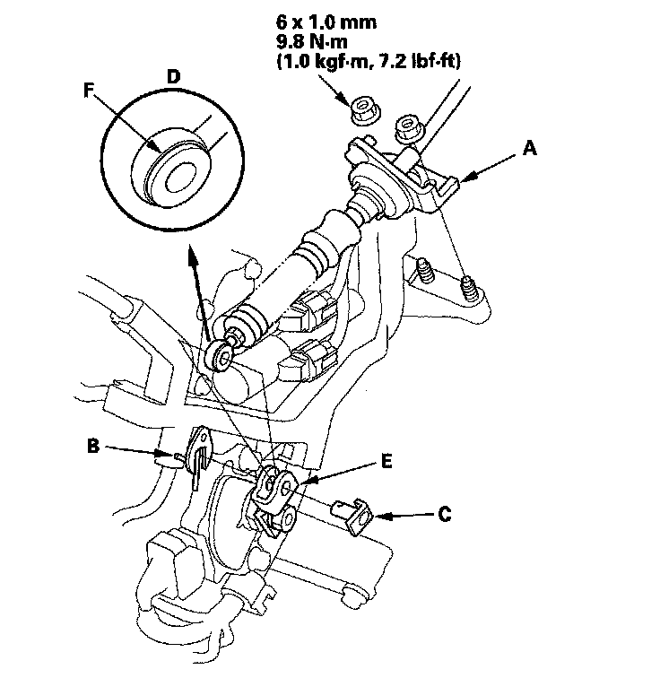
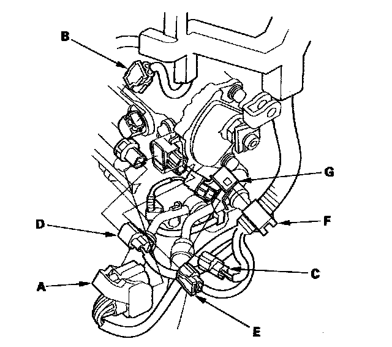
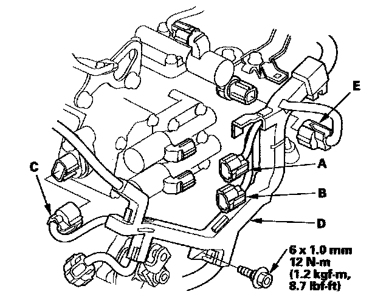
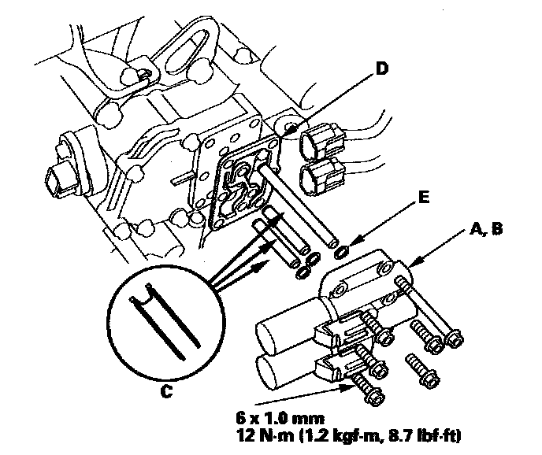
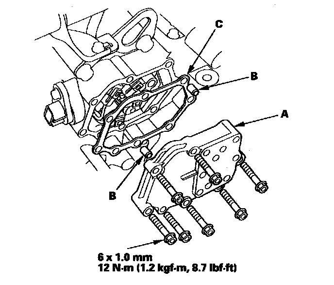
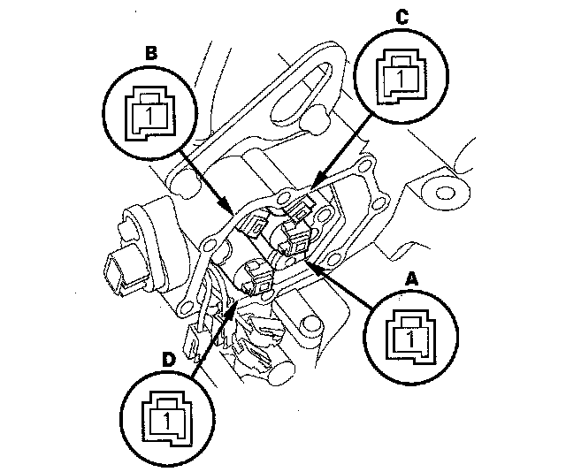
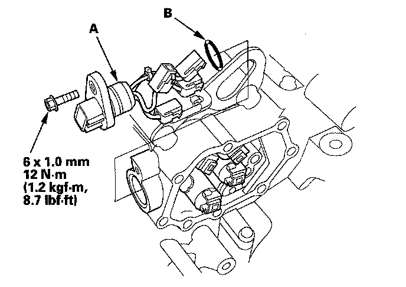
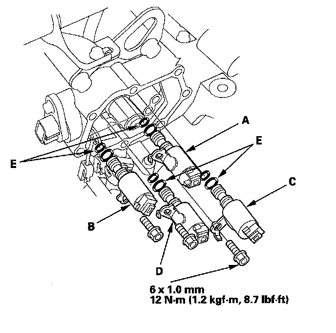

Shift Solenoid: Testing and Inspection
Shift Solenoid Valve Test, Replacement, and Shift Solenoid Wire Harness Replacement1. Connect the HDS to the DLC (A).

2. Choose Shift Solenoid A, B, C, and D in the Miscellaneous Test Menu on the HDS.
NOTE: If the HDS does not communicate with the PCM, troubleshoot the DLC circuit.
3. Check that shift solenoid valves A, B, C, and D operate with the HDS. A clicking sound should be heard.
^ If a clicking sound is heard, the valves are OK. The test is complete, disconnect the HDS.
^ If no clicking sound is heard, go to step 4, and test the solenoid valves.
4. Make sure you have the anti-theft codes for the audio system and the navigation system (if equipped).
5. Disconnect the negative terminal from the battery, then disconnect the positive terminal.
6. Remove the battery hold-down bracket, and remove the battery cover, battery, and battery tray.
7. Remove the under-hood subfuse box from its bracket, and remove the bracket from the battery base.
8. Remove the intake air duct and air cleaner housing.
9. Remove the battery base and battery base bracket.
10. Remove the nuts securing the shift cable bracket (A).

11. Remove the spring clip/washer (B) and control pin (C) then separate the shift cable end (D) from the control lever (E).
12. Check the synthetic resin bushing (F) in the shift cable end for a proper fit and wear. If the bushing is loose or worn, replace the shift cable.
13. Disconnect the transmission range switch connector (A), input shaft (mainshaft) speed sensor connector (B), output shaft (countershaft) speed sensor connector (C), 3rd clutch transmission fluid pressure switch connector (D), and ATF temperature sensor connector (E).

14. Remove the harness clamp (F) from the clamp bracket (G).
15. Disconnect the A/T clutch pressure control solenoid valve A connector (A) A/T clutch pressure control solenoid valve B connector (B) and shift solenoid harness connector (C).

16. Remove the bolt securing the harness cover (D) and disconnect the 4th clutch transmission fluid pressure switch connector (E).
17. Remove the A/T clutch pressure control solenoid valve A and B, ATF pipes (C), and gasket (D).

18. Replace the gasket and O-rings (E) with new ones when installing the A/T clutch pressure control solenoid valve A and B.
19. Remove the solenoid valve cover (A) dowel pins (B), and gasket (C).

20. Replace the gasket with new one when installing the solenoid valve cover.
21. Disconnect the connectors from shift solenoid valve A, shift solenoid valve B, shift solenoid valve C, and shift solenoid valve D.

22. Measure the resistance of each shift solenoid valve between the connector terminal and body ground.
Standard: 12-25 Ohms
^ If the resistance is out of standard, go to step 25 and replace shift solenoid valve.
^ If the resistance is within the standard, go to step 23 and check solenoid valve for a clicking sound.
23. Connect a jumper wire from the negative battery terminal to the body ground, and connect another jumper wire from the positive battery terminal to each solenoid valve terminal individually.
^ If a clicking sound is heard, go to step 24 and replace the shift solenoid harness.
^ If no clicking sound is heard, go to step 25 and replace shift solenoid valve.
24. Remove the shift solenoid harness connector (A) and replace it. Install a new O-ring (B) on the shift solenoid harness connector, and install the connector in the transmission housing, then go to step 31.

25. Remove the mounting bolts, then remove the solenoid valves.

26. Install new O-rings (two O-rings per solenoid valve) (E) on the reused solenoid valves.
NOTE: A new solenoid valve comes with new O-rings. If you install a new solenoid valve, use the O-rings provided on it.
27. Install shift solenoid valve D (black connector) by holding the shift solenoid valve body; make sure the mounting bracket contacts the accumulator body.
NOTE: Do not hold the solenoid valve by the connector when installing the solenoid valve. Be sure to hold the solenoid valve body.
28. Install shift solenoid valve A (black connector) by holding the shift solenoid valve body; make sure the mounting bracket contacts the accumulator body.
29. Install shift solenoid valve C (brown connector) by holding the shift solenoid valve body; make sure the mounting bracket contacts the bracket of shift solenoid valve A.
NOTE: Do not install shift solenoid valve C before installing shift solenoid valve A. If shift solenoid valve C is installed before installing shift solenoid valve A, it may damage the hydraulic control system.
30. Install shift solenoid valve B (brown connector) by holding the shift solenoid valve body; make sure the mounting bracket contacts the accumulator body.
31. Connect the harness terminals to the solenoids:
^ YEL wire connector to shift solenoid valve A.
^ GRN wire connector to shift solenoid valve C.
^ RED wire connector to shift solenoid valve B.
^ ORN wire connector to shift solenoid valve D.
32. Install the shift solenoid valve cover, dowel pins, and a new gasket.
33. Install the new solenoid valve body gasket on the solenoid valve cover, and install the ATF pipes with their filter side into the transmission housing. Install the new O-rings over the ATF pipes.
34. Install A/T clutch pressure control solenoid valve A and B.
35. Secure the harness cover with the bolt.
36. Check the connectors for rust, dirt, or oil, clean or repair if necessary, then connect the connectors securely.
37. Apply molybdenum grease to the bore hole of the synthetic resin bushing in the shift cable end, and attach the shift cable end to the control lever, then insert the control pin into the control lever hole through the shift cable end, and secure the control pin with the spring clip/washer.
38. Secure the shift cable bracket with the nuts.
39. Install the battery base bracket and battery base.
40. Install the air cleaner housing and intake air duct.
41. Install the under-hood subfuse box on the battery base, and install the subfuse box on its bracket.
42. Install the battery tray, battery, battery cover, and battery hold-down bracket, then connect battery terminals.
43. Enter the anti-theft codes for the audio system and the navigation system (if equipped). Set the clock.
44. Do the steering column position memorization.
45. Do the power window control unit reset procedure.